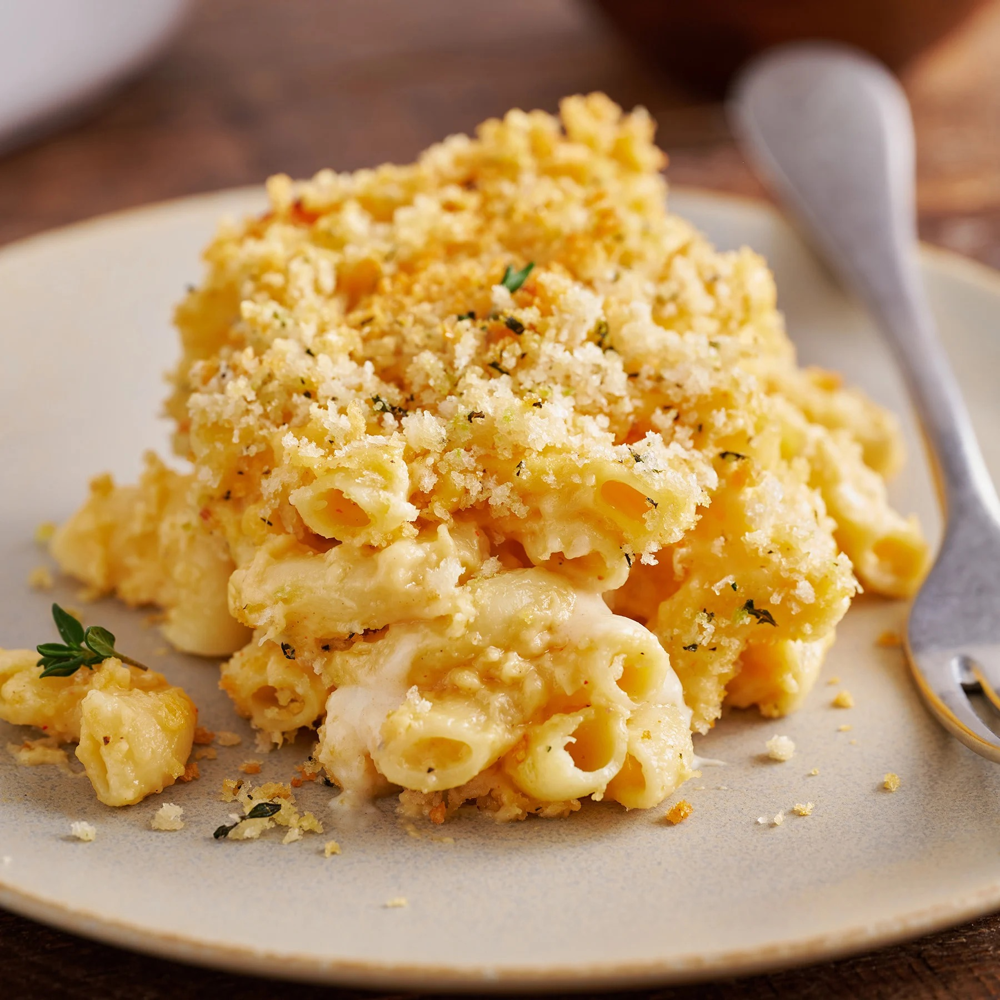

Mac and Cheese with Bread Crumbs Recipe

Description
Indulge in our creamy mac and cheese with a crispy breadcrumb topping:
a comforting classic elevated to perfection.
Ingredients
- 8 ounces elbow macaroni
- 2 cups shredded cheddar cheese
- 1 cup shredded mozzarella cheese
- 2 tablespoons butter
- 2 tablespoons all-purpose flour
- 2 cups milk
- 1/2 teaspoon salt
- 1/4 teaspoon black pepper
- 1/4 teaspoon garlic powder
- 1/4 cup breadcrumbs (preferably Panko breadcrumbs)
Steps
Step 1
- Cook macaroni until al dente, then drain.
Step 2
- Make a cheese sauce with butter, flour, milk, and shredded cheddar and mozzarella cheeses.
Step 3
- Combine macaroni and cheese sauce in a baking dish.
Step 4
- Top with breadcrumbs.
Step 5
- Bake at 350°F (175°C) for 20-25 minutes until golden and bubbly.
Step 6
- Serve and enjoy!